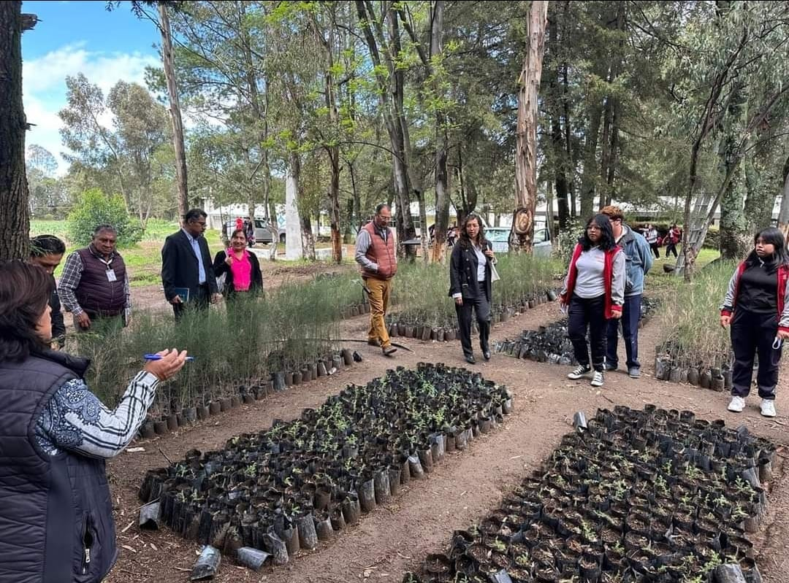
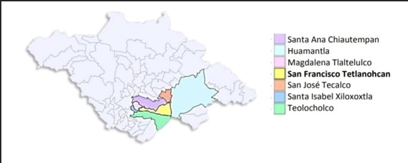
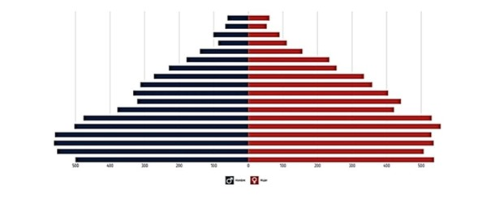
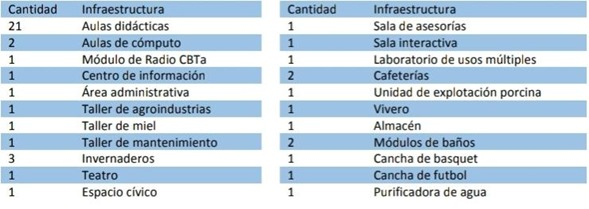
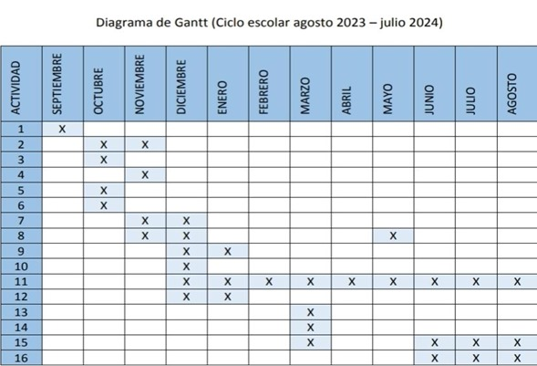
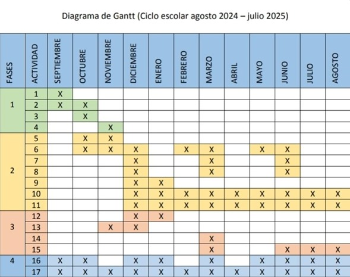

El presente es un diagnóstico realizado a la comunidad escolar y social, asociados al CBTa 134 de San Francisco Tetlanohcan, Tlaxcala, para su elaboración se utilizó la metodología Del CONOCER de la certificación 069, Consultoría a empresas rurales y del Sistema Nacional De Capacitación y Asistencia Técnica Rural Integral (SINACATRI), el consultor en este caso responsable del proyecto realizó este trabajo de manera coordinada con los actores que conforman la comunidad, desarrollando diferentes actividades para la obtención de la información. En base a los resultados se tiene una radiografía de la situación actual del Entorno y con base a estos se establecerán las estrategias a seguir por los que integran el proyecto
El plantel se ubica en el municipio de San Francisco Tetlanohcan, Tlaxcala, el cual tiene aproximadamente una población de 11 761 habitantes, sus principales actividades se encuentran en la agricultura, ganadería y Silvicultura. Colinda al Norte con el municipio de Santa Ana Chiautempan y San José Teacalco, al Sur conTeolocholco, al Oriente con Huamantla y al Poniente con la Magdalena Tlatelulco y Santa Isabel Xiloxoxtla
La población total de San Francisco Tetlanohcan en 2020 fue 11,761 habitantes, siendo 52% mujeres y 48% hombres. Los rangos de edad que concentraron mayor población fueron 10 a 14 años (1,098 habitantes), 15 a 19 años (1,088 habitantes) y 5 a 9 años (1,060 habitantes). Entre ellos concentraron el 27.6% de la población total.
Las carreras que se imparten son: Cuenta con Sistema Abierto “SAETAM” y la carrera ofertada es Técnico Agropecuario. Tiene una superficie de 26 ha. Dentro de la cual se enlista a continuación la infraestructura:
La institución cuenta con servicios básicos de comunicación, energía eléctrica, agua potable y transporte público.
Se presentan tres formas características de relieve: Zonas accidentadas, que abarca el 10.0 por ciento de la superficie total y se localizan en la parte oriente del municipio la cual es donde se ubica el plantel. Zonas semiplanas, que con un 25.0 por ciento de la superficie, se localizan en la parte central del municipio. Zonas planas, que abarcan el 65.0 por ciento de la superficie y se encuentran ubicada en la parte occidental del municipio.
Los recursos hidrográficos en general son escasos, sin embargo existen arroyos de caudal durante la época de lluvias, así como manantiales, pozos para extracción de agua potable y riego, en el caso del plantel tiene un sistema de captación de agua y una olla sin fucionamiento debido a la ruptura de la geo membrana.
Se considera templado subhúmedo, con régimen de lluvias en los meses de mayo, julio, Agosto y septiembre. Los meses más calurosos son abril y mayo. La dirección de los vientos en general es de norte a sur y de oeste a noroeste, la temperatura media anual registrada fluctúa de 6.4 como mínima a 22.7 grados centígrados como máxima. Durante el año, se presentan diversas temperaturas. Durante el temporal que abarca los meses de junio
En el territorio del municipio de San Francisco Tetlanohcan se advierten cuatro grandes Tipos de suelos: los cambisoles, fluvisoles, regosoles, y andosoles. Corresponden a los cambisoles, aquellos suelos de sedimentos piroclásticos translocados, con frecuencia con horizontes duripan ó tepetate. Los suelos fluvisoles, éstos comprenden sedimentos aluviales poco desarrollados y profundos. Los suelos regosoles, son de sedimentos sueltos, muy poco desarrollados, profundos, con horizonte A ócrico. Por último, los suelos andosoles provienen de sedimentos piroclásticos, por lo general bien desarrollados de profundidad media a profundos muy sueltos.
La totalidad del municipio de San Francisco Tetlanohcan está en el volcán de La Malinche, por ende también el Plantel CBTa 134, por ello su vegetación está dispuesta en varios estratos altitudinales, en la parte inferior se encuentra el bosque de encino (Quercus laeta, obtusata, Q. crassipes), que a menudo se encuentran conviviendo con el ocote chino (Pinus leiophylla); un poco más arriba el encino de hoja grande (Q. rugosa) se encuentra asociado al madroño (Arbutus jalapensis) y al pino real (Pinus montezumae), además del pino blanco (Pinus pseudostrobus) y al ailite (Alnus jurollensis). Este estrato es compartido con especies de menor talla como el huejote (Salix paradoxa) y el tepozán (Buddleia Parviflora). Entre los 2 800 y 3 500 m., de altitud se encuentra el bosque de oyamel (Abies religiosa), Árbol cuya copa es parecida a la de un cono y que se caracteriza por su majestuosidad y belleza; por arriba de este bosque de oyamel se encuentra un bosque de pino de alto (Pinus Hartwegii), mismo que marca el límite superior de la vegetación arbórea, puesto que más arriba, antes de llegar a la cima de la montaña, sólo se encuentra la vegetación conocida como páramo de altura o zacatonal alpino a una altitud superior a los 4 300 m. Algo sobresaliente en la cima de la montaña, es la presencia de un pequeño árbol, cuyo nombre común es junípero o cedrillo enano (Juniperus monticola), arbusto que presenta hábito rastrero y comúnmente crece en sitios rocosos y fríos. Es importante resaltar que la densidad media del arbolado en el volcán de La Malinche, es de 205 individuos por hectárea y el 61.5 por ciento de su arbolado son coníferas y el 38.5 por ciento son hojosas, además de presentar casi en la totalidad de su superficie huellas de incendio y de pastoreo.
No obstante el crecimiento y expansión acelerada de la mancha urbana, en el territorio del Municipio, todavía es común encontrar algún tipo de fauna silvestre como por ejemplo conejo (Silvilagus floridanus) y liebre (Lepus californicus). En la planicie aves y reptiles como la codorniz (Cyrtonix montezumae), picapinos, víbora de cascabel (Crotalus sp) y escorpión.
La problemática identificada que puede trabajarse colaborativamente entre la comunidad escolar y social es la perdida de bosque en la Malinche.
Las soluciones en donde podemos contribuir son:
A través de lo identificado se acordó presentar la propuesta ante los docentes en la reunión de consejo técnico para su aprobación, en dicha reunión realizada el 29 de septiembre de 2023, se aprobó que la problemática a abordar para el PAEC sea la señalada en dicho Documento, también se le asignó un nombre el cual es “GUARDIANES DE LA MALINCHE” Posteriormente se procedió a realizar una reunión de trabajo para la conformación del comité que dará seguimiento al PAEC y docentes de diferentes UAC para el diseño de las actividades.
Una vez iniciado el ciclo escolar 2023-2024 se realizó una reunión con la comunidad escolar, donde se describieron las características del entorno escolar, social y ecológico, se identificaron las necesidades y problemáticas que existen, haciendo una lista de estas, a través de la información obtenida de una lluvia de ideas, las cuales quedaron de la siguiente manera:
Posteriormente en consenso se eligió el problema: pérdida de biodiversidad la cual se Consideró que tendrá un mayor impacto por los siguientes motivos;
Siendo así la “REFORESTACIÓN” la propuesta viable para contribuir a solucionar el problema planteado.
Colaborar transversalmente las diferentes UAC, UA y módulos del componente profesional para movilizar los conocimientos y saberes del estudiantado del Centro de Bachillerato Tecnológico Agropecuario Número 134 y llevar a cabo el proceso de; concientización, producción, manejo y reforestación, así como involucrar a la comunidad escolar y público en general para contribuir al rescate de la biodiversidad, con un enfoque sustentable y sostenible.
Agosto 2023/Julio 2024
Agosto 2024/Julio 2025
Recorrido por las faldas de la malinche que se encuentran dentro de las instalaciones del plantel para la identificación de las especies forestales que están adaptadas, recolectar semilla y recabar evidencia de las diferentes especies. Dichas actividades se realizan por las docentes que conforman el comité y que son parte de las UAC de Lengua y comunicación, Pensamiento matemático y Tutorias, también se solicita apoyo de la asociación Matlalcueyelt Vive, CONAFOR y la UAT para una capacitación sobre el proceso de recolección de semilla, identificación de las especies y las normas que aplican para dicha colecta.
Investigar la ficha técnica de cada especie, los estudiantes a través del estudio independiente investigan la ficha técnica de cada especie forestal que se encuentra inmerso en el plantel.
Elaboración de un catálogo físico y digital, con la información que indagaron los estudiantes elaboran un catálogo físico incorporando la evidencia que recolectaron en el recorrido, el cual posteriormente será digitalizado para su difusión como producto de la UAC de Cultura Digital
Elaboración de almácigo, en el vivero que se encuentra en el plantel los estudiantes y los docentes de Lengua y Comunicación, Pensamiento Matemático componente Profesional, explican y muestran cómo se debe realizar el almacigo para que puedan germinar las semillas.
Germinación de semilla, una vez realizado el almacigo con las proporciones adecuadas de sustrato, se procede a explicar el método de siembra, en este caso por hilera (chorrillo), los estudiantes proceden a trazar el espacio y colocar la semilla, se da la indicación de los riegos y esperar una semana para iniciar con las evidencias de la emergencia de las semillas.
Preparación de sustrato para bolsa, una vez que la plántula (árbol) tenga el tamaño adecuado se comienza con la preparación de sustrato para el trasplante, donde se aborda el tema de razones y proporciones, el cálculo referente al sustrato requerido en relación al tamaño de las bolsas para la cantidad de plántula germinada
Llenado de bolsas, ya preparado el sustrato la comunidad escolar (todos los grupos) colaboran en el llenado de las bolsas. En este punto es importante agregar que también se realizará una campaña de colecta de pet por parte de la comunidad escolar con la finalidad de intercambiarlo por bolsa y Plántulas con la Asociación Por Amor a mi Planeta, con ayuda del Ing. Edgar Atriano Integrante de la Asociación Matlalcueyetl Vive.
Trasplante de la plántula, en cuanto estén listas las bolsas con el sustrato, los docentes de componente profesional y el enlace de la asociación de Matlalcueyetl Vive explican el correcto proceso de trasplante a la comunidad escolar de primer semestre, se asigna un espacio junto al vivero de la escuela donde se trazaran bloques en los cuales se acomodarán los árboles, esto con el fin de crear orden en cuanto el acomodo, así como pasillos que faciliten el acceso y se pueda dar un buen seguimiento.
Diseño de cronograma de riego, mantenimiento y asignación de roles, para el seguimiento de los arboles trasplantados, se realizará un cronograma donde se designarán los responsables de cada bloque, así como el periodo y cantidad de riego correspondiente a cada etapa fisiológica del árbol.
Seguimiento al cronograma de actividades, los docentes que integran el comité, así como el docente encargado del vivero y el responsable del seguimiento del proyecto estarán en comunicación para darle seguimiento al avance y al cumplimiento de las actividades por medio de la elaboración y revisión de bitácoras.
Difusión de información para la concientización de la tala y quema de bosques en redes sociales, los estudiantes dentro de la UAC realizan folletos e infografías que publicaran en redes sociales, dirigido al público en general, así mismo crearan podcast y spot que difundirán en el Radio CBTa sobre la importancia de las buenas prácticas agrícolas.
Pláticas de prácticas de conservación de suelo, producción de planta y reforestación por parte de la Comisión Nacional Forestal, Universidad Autónoma de Tlaxcala; gestionadas por parte de vinculación de la coordinación de la DGETAYCM en el Estado de Tlaxcala.
Vinculación con la brigada de Sabi la Ardilla, se pretende formar parte de la Brigada Sabi para que el plantel sea el enlace y se realicen campañas de limpieza en el bosque de manera periódica haciendo la invitación a todo el público en general.
Talleres de producción de planta forestal, ofrecer talleres de producción de planta al público en general.
Reforestación, esta acción se realizará en dos momentos, el primero se podrá hacer con los árboles obtenidos del intercambio del Pet; por las bolsas y árboles embalados, el segundo momento es cuando los árboles que fueron producidos en la escuela ya tienen el tamaño adecuado y las condiciones para poder ser sembrados. Para esto se necesita esperar la temporada de lluvias y garantizar la supervivencia de los arboles, se programará una semana de reforestación de manera escalonada haciendo referencia a que toda la comunidad escolar y social participará, se toma en cuenta una semana debido a que hay que seleccionar el lugar para la reforestación, la limpieza del mismo, la elaboración de la cepa y la plantación. Posteriormente se realizará la misma campaña, pero en la época de sequía en esta ocasión no para reforestar sino para darle seguimiento a los árboles, proporcionándoles en la medida de lo posible agua por medio de lluvia sólida.
Reuniones de seguimiento, cada mes se deberá realizar un seguimiento de las acciones realizadas del proyecto, presentando un informe en cada reunión de Consejo Técnico Académico o cuando este se requiera.